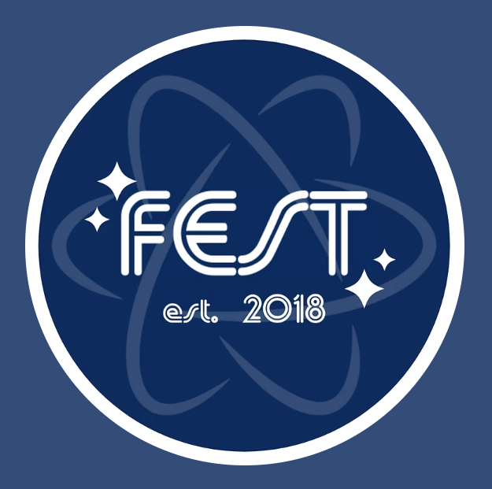
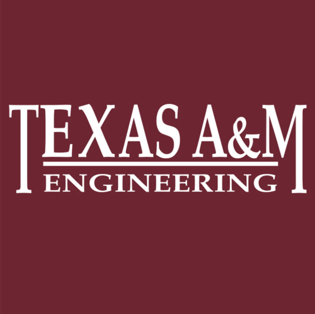
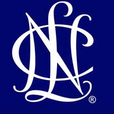

Organizations

For the past three years, I have participated in FEST (Freshmen in Engineering, Science, and Technology), a Freshman Leadership Organization at Texas A&M University that fosters community and leadership through service, community, and professionalism. In FEST, both as a freshman and as a leader, I have participated in numerous service projects, including BUILD, Aggieland Humane Society, Aggie Habitat for Humanity, The Big Event, and more. FEST has provided me with consistent opportunities to give back to the community throughout my college experience.
Work

My role as a Peer Teacher for Texas A&M College of Engineering has enabled me to give back to the program that has supported me in my educational endeavors. In ENGR 102, students learn to program in Python – this is where I first learned to program! Peer teaching has enabled me to help other students not only learn to program but to find a passion for the process and the logic involved in programming.

Working as a Campus Leader for Notion has provided me with a multitude of opportunities to support the student community at Texas A&M through the advertisement and education of a platform that fosters creativity and productivity. Educating others about Notion has been such a gift in allowing me to share a platform that has been so beneficial in my personal, educational, and professional endeavors, and witness others reap those same benefits.
Volunteering

Throughout middle school and high school, I was a member of my local chapter of National Charity League, a volunteer organization for mothers and daughters to give back to their communities. Through National Charity League, I volunteered for over 400 hours with the American Red Cross, Humane Society, and numerous local charity organizations, such as elderly homes and women's shelters. This experience taught me the importance of community outreach from a young age, providing me with the experience to give back, all while spending quality time with my mom!